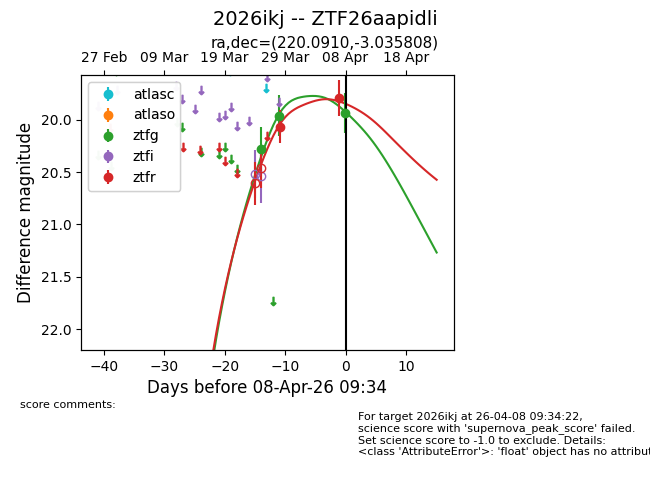
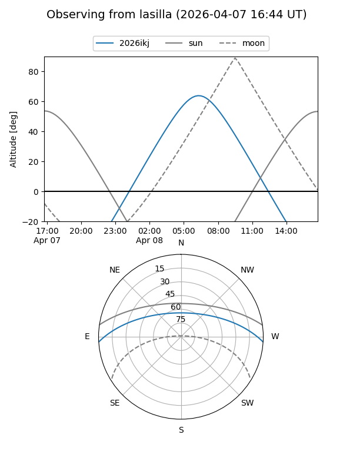
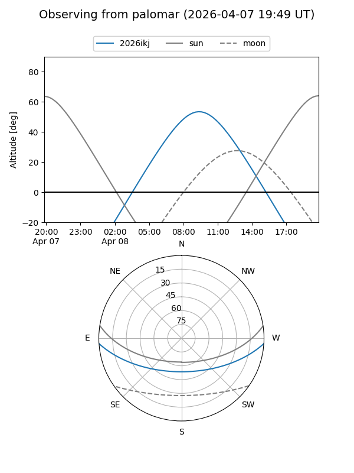
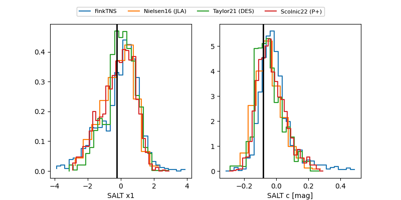

2026ikj
Target 2026ikj at 2026-04-08 09:41
Aliases and brokers:
FINK: link
Lasair: link
ALeRCE: link
TNS: link
YSE: link
alt names
ZTF26aapidli (ztf,fink_ztf)
2026ikj (tns,yse)
Coordinates:
equatorial (ra, dec) = 220.0910,-3.03581
equatorial (HMS+DMS) = 14:40:21.85,-03:02:08.91
galactic (l, b) = (348.2431,+50.00372)
Flags:
likely cv
Photometry:
last ztfg=19.94, ztfr=19.79
3 ztfg, 2 ztfr detections
Lightcurve

Visibility


Additional plots
